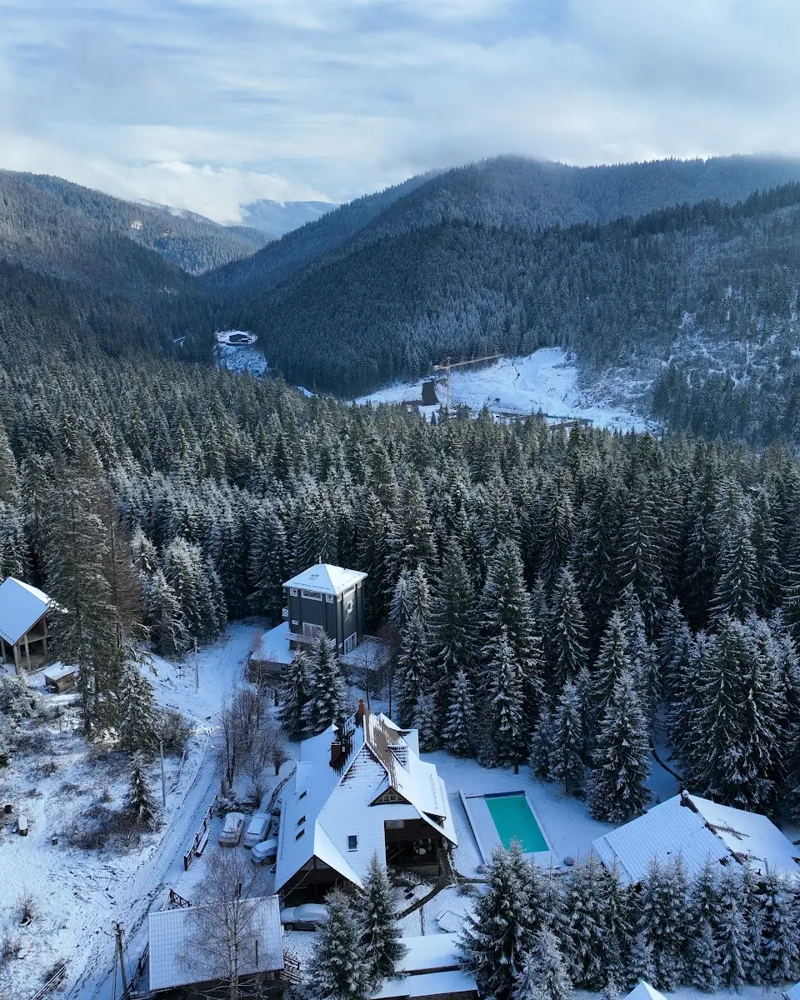
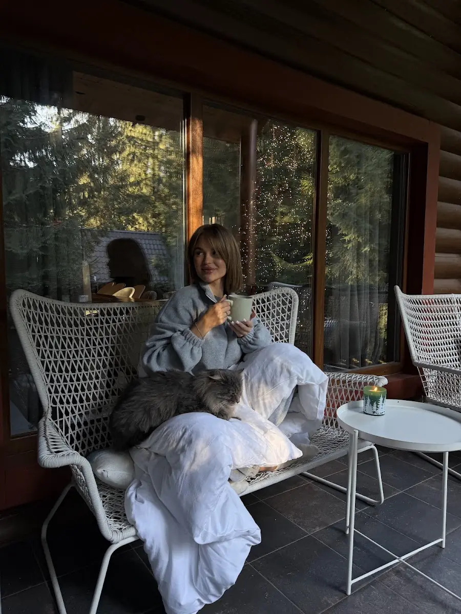
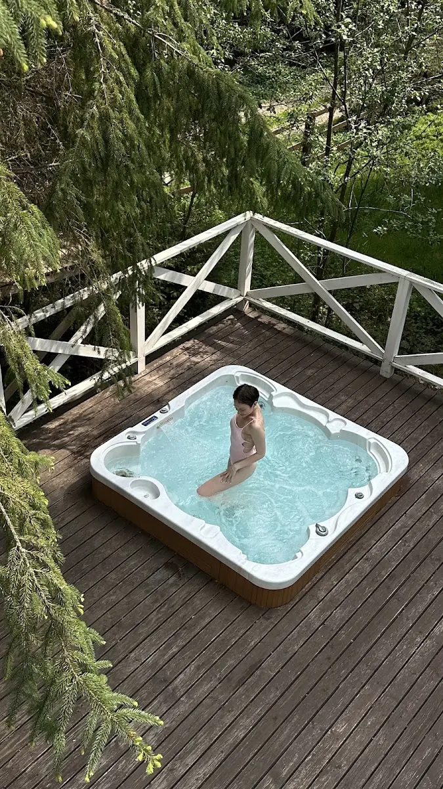
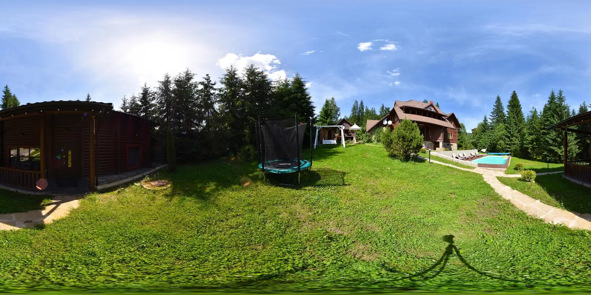
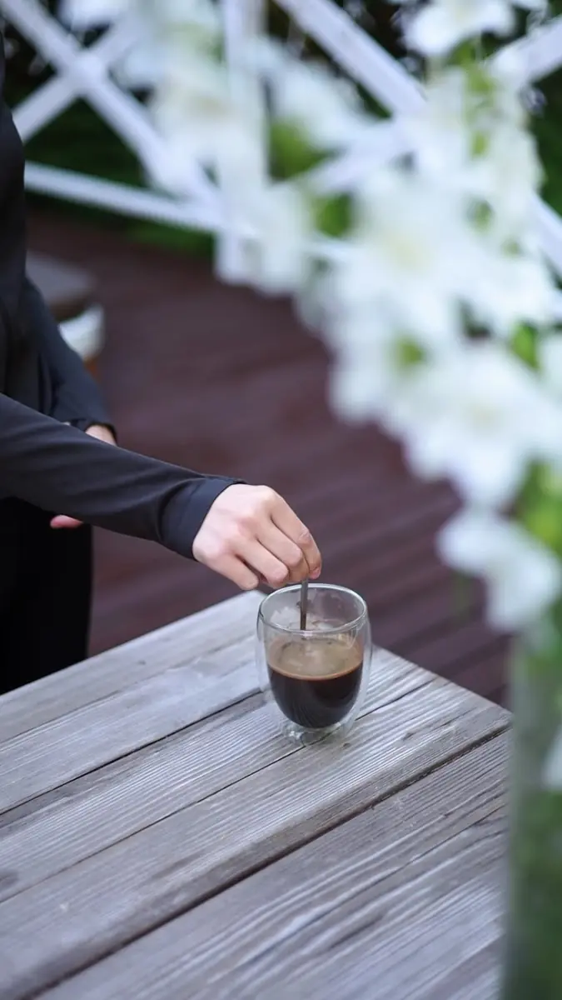
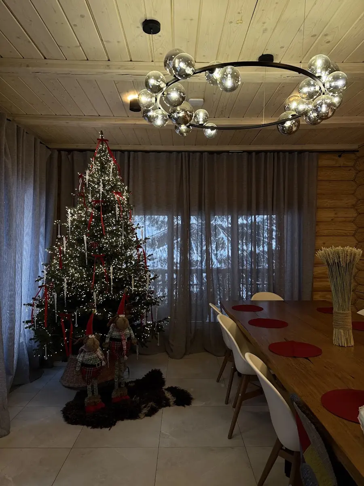
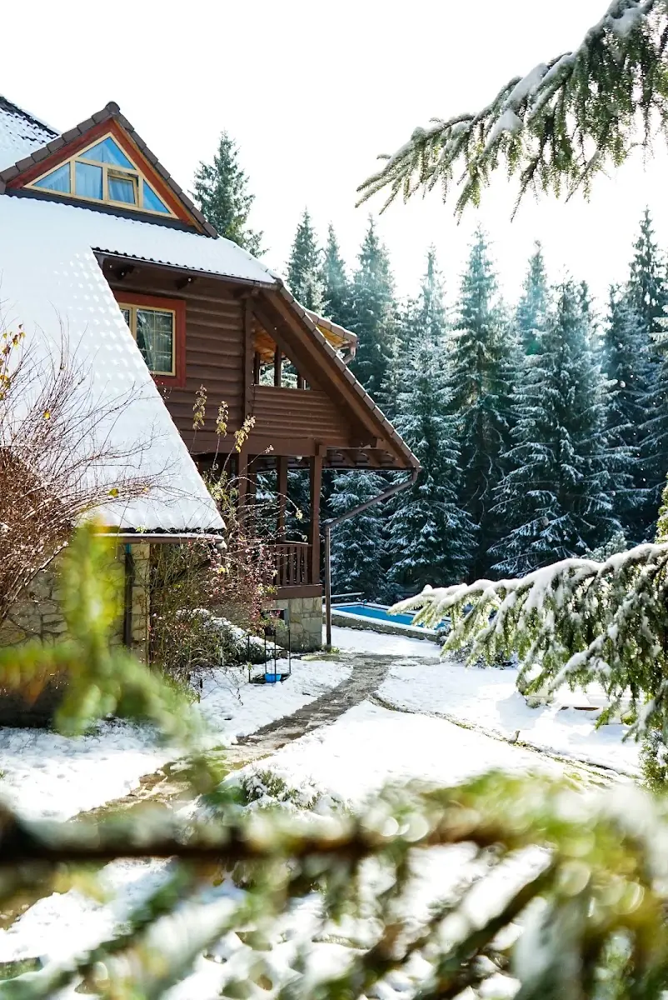
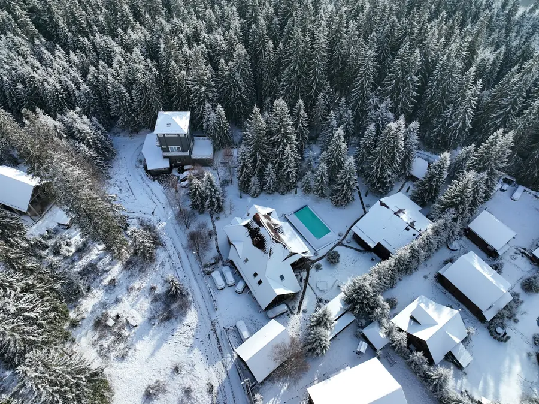

Вежа
На першому поверсі кухня-студія, їдальня й тераса з джакузі. Тепла підлога. На другому–четвертому двомісні спальні з душем і власними терасами. Нагорі оглядовий зал з настільними іграми та телескопом.
від 10 000 ₴ / ніч

Чотири зруби на 6–14 гостей у Поляниці, за 5 км від Буковеля.
Від 10 000 ₴ за котедж · сніданок включено · Google 4,9 з 448 відгуків
Підібрати котеджЗ трьох боків маєток обіймає Карпатський нацпарк. Від воріт стежки ведуть до водоспаду, полонини й на гору Хом'як.

Зранку чути тільки птахів, увечері тріщить камін.
Поляниця, вул. Прохідний, 192.
48.3491° пн. ш., 24.4742° сх. д.
Ділянка під відеоспостереженням.
Відчинено до 23:00.
Усі котеджі з натурального зрубу, з власною кухнею, теплом і безперебійним світлом.
На першому поверсі кухня-студія, їдальня й тераса з джакузі. Тепла підлога. На другому–четвертому двомісні спальні з душем і власними терасами. Нагорі оглядовий зал з настільними іграми та телескопом.
від 10 000 ₴ / ніч
Камінний зал з великим телевізором і довгим обіднім столом. Вітальня з дитячою зоною. Шість двомісних номерів, у кожному — санвузол з душем, шафа й телевізор.
від 29 200 ₴ / ніч
Ліжка king-size в усіх спальнях, сучасний ремонт. Кухня з посудомийкою, духовкою та всім посудом. Камінний зал і їдальня внизу, вітальня нагорі.
від 29 200 ₴ / ніч
Внизу чотиримісна кімната з кухонним куточком і обіднім столом. Нагорі двокімнатний номер. Санвузол з душем на кожному поверсі.
від 10 000 ₴ / ніч
Наведіть на будь-який рядок, і тут з'явиться подробиця.





«Маєтокзнаходиться
упрямомусенсі
всамомулісі»
Відпочивали 5 днів у котеджі Вежа. Тепла підлога на першому поверсі дуже вразила, санвузли майже на всіх поверхах. До Буковеля 5–10 хвилин.
Вранці снідали на терасі під спів пташок. Камінна зала, де ми проводили вечори компанією. Пан Юрій завжди на зв'язку.
Неймовірно гарна та доглянута територія, в будиночку сучасний ремонт, усе дуже чистенько.
Маєток стоїть на вулиці Прохідний, 192, у селі Поляниця Надвірнянського району, за 5 км від Буковеля, біля підніжжя гори Хом'як.

Маєток Ліс і Гори це котеджний комплекс у Поляниці для тих, хто шукає відпочинок у Карпатах без натовпу, але поруч із Буковелем. Взимку до підйомників 5–10 хвилин машиною, а ввечері гості повертаються в тишу лісу: до каміна, лазні та чану.
Улітку працює відкритий басейн з підігрівом, а від воріт починаються піші маршрути на Хом'як, до водоспаду й полонини. Котеджі на 6–14 гостей підходять для сімей з дітьми, компаній друзів і корпоративного відпочинку в Карпатах.
П'ять кілометрів, до підйомників ведуть дві дороги, це 5–10 хвилин машиною.
Так, за попередньою домовленістю. Позначте «з собакою» в заявці, і ми підтвердимо котедж.
Так, сніданок включено. У кожному котеджі також є кухня з посудом і технікою, тож вечерю можна готувати самим або на мангалі.
Відкритий басейн з підігрівом працює в теплий сезон. Лазня, чан і джакузі на терасі Вежі працюють цілий рік.
Так, можна замовити трансфер з аеропорту або вокзалу. Напишіть час прибуття в побажаннях.
Так: дитячий майданчик, дитяча зона у вітальні шале, огороджена тиха територія далеко від траси.
+38 050 468 04 70
Поляниця, Буковель